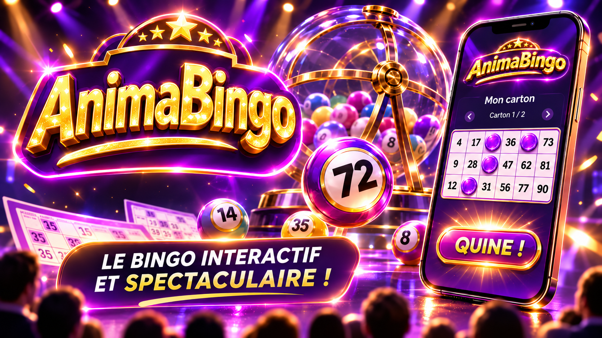
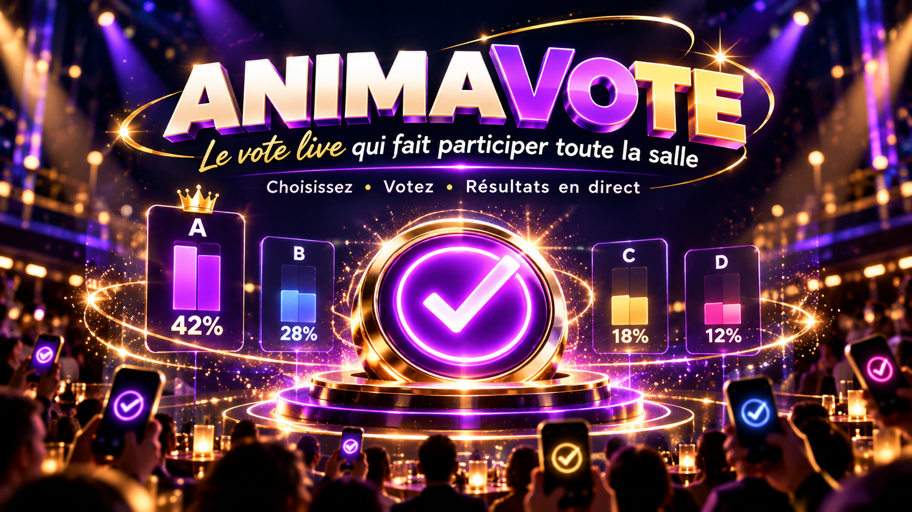

Événement
Informations générales
Informations de base de votre événementSession activeUne seule session active à la fois sur le compte
Grand écran
Personnalisation
Fond, logo et habillage du diaporamaFond
Couleur de fond
Image de fond
Choisir une image ou glisser-déposer
Opacité overlay
40 %
Logo
Afficher le logo
TailleMoyen
PositionEn haut à gauche
Diaporama
Affichage des photos sur le grand écranAfficher le QR code
Taille du QR code
TransitionFondu enchaîné
Duréepar photo
6 s
Messages
Messages des invités sur le diaporamaFréquence d'affichagetoutes les 4 photos
4
Durée d'affichage
8 s
Affiches promotionnelles
Jusqu'à 20 affiches intercalées dans le diaporamaFréquence d'affichageune affiche toutes les 6 photos
6



+ Ajouter
Affichage écran secondaire
Projeter le diaporama et les jeux sur un écran ou une TVBrancher le second écran
Reliez votre écran ou téléviseur (HDMI). Dans les réglages d'affichage de votre ordinateur, choisissez le mode « Bureau étendu » (et non « Recopie » / « Duplication »). Glissez ensuite la fenêtre AnimaJet sur ce second écran, puis activez le plein écran avec le bouton ⛶ en haut à droite.Sur Mac
- En plein écran, une fine barre du navigateur peut rester visible en haut de l'écran secondaire : c'est une limitation du web sur Mac, pas un bug.
- Agrandissez la fenêtre sur l'écran TV avant de passer en plein écran ; Échap pour quitter.
- Avec Safari : menu Présentation → décochez « Toujours afficher la barre d'outils en plein écran », puis Ctrl + Cmd + F (deux fois si besoin).
Borne & impression
AnimaBooth
Réglages de la borne photoCompte à rebours
Durée
Délai retour caméra
10 s
Caméra par défaut
Nom de l'événementaffiché sur la borne
Impression
Photos de la borne et des invités — désactivéeMode d'impressionSur demande
Limite d'impressions
Impression payante
Prix de l'impression
Invités
Demandes de musique
Les invités proposent leurs titres au DJDemandes par invité
Compte
Réglages par défaut du compte
Appliqués à chaque nouvelle sessionUtiliser les réglages de cette session comme modèle